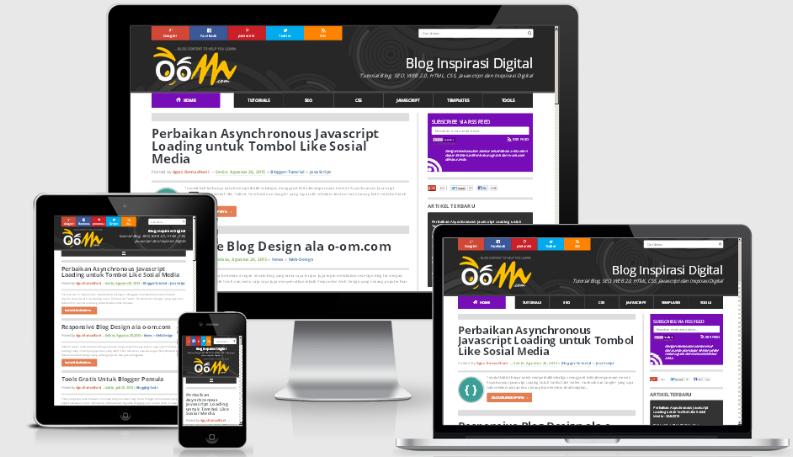

Bootstrap Introduction
Powered by Bespoke
Team List :
1.Riandy Irvan Winargo
2.Denis Suryanto
3.Jilbert
Lets get Started !!
fullscreen click button below
Set Your Text Color !!!
Font-Color :
test here
Set Your workspaces !!!
Background-Color :
Interactive features
hi
What is Bootstrap ?
Bootstrap adalah framework yang digunakan untuk menstyling web anda dengan CSS yang sudah diminified dan JS script yang sudah di minified juga untuk memaksimalisasikan tampilan CSS dan Javascript pada web anda.
Apa itu Bootstrap?
- Bootstrap adalah framework
- Bootstrap untuk web yang memiliki CSS and Javascript
- Bootstrap sangat fleksible
- Bootstap untuk membangun web Secara Dinamis dan Statis
Advance Here
Bootstrap Implementation
Provide a link to Boostrap using html tags.
"<"Link rel='stylesheet'
href="https://maxcdn.bootstrapcdn.com/bootstrap/3.3.7/css/bootstrap.min.css"
integrity="sha384-BVYiiSIFeK1dGmJRAkycuHAHRg32OmUcww7on3RYdg4Va+PmSTsz/K68vbdEjh4u"
crossorigin="anonymous">
"<"script src="https://maxcdn.bootstrapcdn.com/bootstrap/3.3.7/js/bootstrap.min.js"
integrity="sha384-Tc5IQib027qvyjSMfHjOMaLkfuWVxZxUPnCJA7l2mCWNIpG9mGCD8wGNIcPD7Txa"
crossorigin="anonymous">
Overviews
- Containers
- Responsive breakpoints
- Z-index
Containers
Containers adalah element layout paling dasar dalam Bootstrap dan diperlukan ketika kita mengunakan default grid system. Pemilihan dari responsive, fixed-width (lebar dari Containers akan menjadi maksimum) dan fuild-width(lebarnya akan selalu 100%).
Contoh fixed-width
standard

lebar container menjadi maksimum

Contoh fuild-width
standard
lebar menjadi maksimum

Contoh Responsive
responsive adalah layout yang akan menyesuaikan diri dengan device yang digunakan.
Responsive breakpoints
Sejak Bootstrap dikembangkan ke mobile, query digunakan untuk membuat layout dan tampilan. Breakpoint ini selalu bedasarkan lebar minumum dan memperbolehkan kita untuk meningkatkan elementnya.
Responsive breakpoints
Contoh Mengunakan Media Query
// Small devices (landscape phones, 576px and up)
@media (min-width: 576px) { ... }
// Medium devices (tablets, 768px and up)
@media (min-width: 768px) { ... }
// Large devices (desktops, 992px and up)
@media (min-width: 992px) { ... }
// Extra large devices (large desktops, 1200px and up)
@media (min-width: 1200px) { ... }
Responsive breakpoints
Contoh Mengunakan Media Query
@include media-breakpoint-up(xs) { ... }
@include media-breakpoint-up(sm) { ... }
@include media-breakpoint-up(md) { ... }
@include media-breakpoint-up(lg) { ... }
@include media-breakpoint-up(xl) { ... }
// Example usage:
@include media-breakpoint-up(sm) {
.some-class {
display: block;
}
}
Z-index
Beberapa komponen Bootstrap Mengunakan "Z-index", properti "CSS" membantu dalam mengatur posisi dan konten web. dengan mengunakan skala default "Z-index" di bootstrap yang dirancang untuk Merapikan navigasi, toolips, popovers, modals dan lain lain.
Contoh Z-index
$zindex-dropdown-backdrop: 990 !default;
$zindex-navbar: 1000 !default;
$zindex-dropdown: 1000 !default;
$zindex-fixed: 1030 !default;
$zindex-sticky: 1030 !default;
$zindex-modal-backdrop: 1040 !default;
$zindex-modal: 1050 !default;
$zindex-popover: 1060 !default;
$zindex-tooltip: 1070 !default;